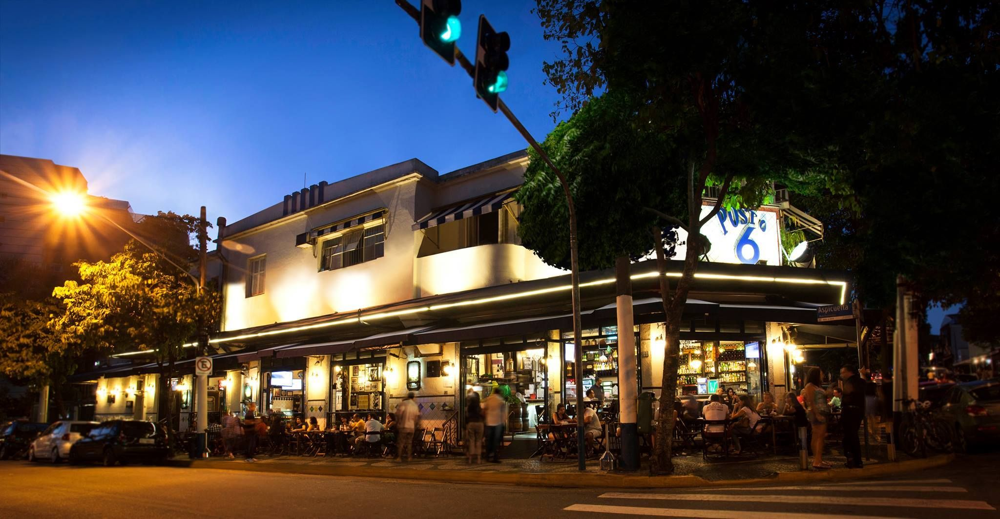

Passear na Avenida Paulista

Um dos principais centros fincanceiros da cidade, a avenida Paulista também possui diversas opções de entretenimento. Endereço do mudeu de São paulo, do Teatro Gazeta e uitos outros, a região é de fácil acesso graças as diversas linhas de ônibus que cruzam a avenida e a linha de metrô que passa por de baixo dela.
Os Bares da Vila Madalena
Depois de um dia de trabalho, nada melhor que bom chopp, um petisco e uma conversa em uma mesa de bar. Opções de sobra na região da ruas Aspicuelta. Fradique Coutinho e Wisard.
O Parque Ibirapuera

Um dos cartões da cidade, porque dispõe de mais de 1,5 km2 de área verde , logas artificiais e pista de cooper e ciclismo. E se isso não fosse o suficiente, o parque costuma ser palco de diversos eventos culturais ao longo do ano.